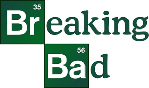
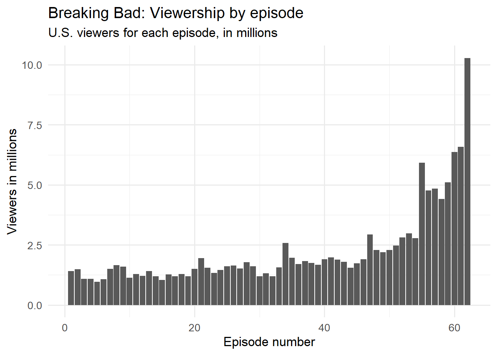
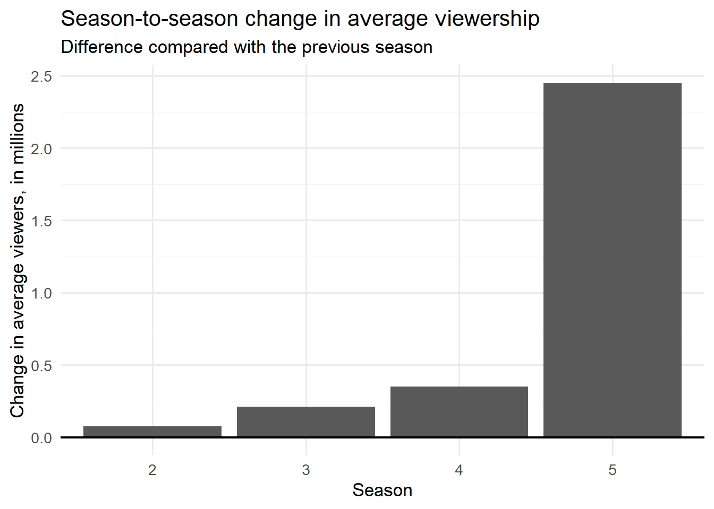

*Breaking Bad* is an American television drama series created by Vince Gilligan for AMC. The series follows Walter White, a chemistry teacher from Albuquerque, New Mexico, who turns to producing methamphetamine after being diagnosed with lung cancer.
knitr::include_graphics("BBphoto.png")

The viewership data used in this report was copied from the Wikipedia page “List of *Breaking Bad* episodes”. The original column is titled “U.S. viewers (millions)”.
Viewership by episode
ggplot(viewership, aes(x = overall_episode, y = viewers_millions)) +geom_col() +labs(title ="Breaking Bad: Viewership by episode",subtitle ="U.S. viewers for each episode, in millions",x ="Episode number",y ="Viewers in millions" ) +theme_minimal(base_size =13)

Season-to-season changes
season_changes <- season_summary |>filter(!is.na(change_from_previous))ggplot(season_changes, aes(x =factor(season), y = change_from_previous)) +geom_col() +geom_hline(yintercept =0, linewidth =0.8) +labs(title ="Season-to-season change in average viewership",subtitle ="Difference compared with the previous season",x ="Season",y ="Change in average viewers, in millions" ) +theme_minimal(base_size =13)

Interpretation
Breaking Bad experienced one of the most dramatic audience increases in modern television. The first two seasons drew relatively small but steady viewership, usually around one to one and a half million viewers per episode. As critical acclaim grew, Seasons 3 and 4 showed a clear upward trend, with episodes approaching two to two and a half million viewers. The real breakthrough came with Season 5, when streaming availability allowed a much larger audience to catch up. Viewership surged to nearly six million for the mid‑season premiere and ultimately peaked at over ten million for the series finale. The numbers reflect a show that transformed from a niche cable drama into a full cultural event by its conclusion.